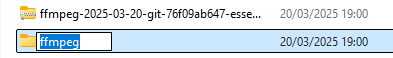

Antes de usar o Facilitatory, baixe o ffmpeg no seu computador Link download direto, ou, se preferir, entre no site e baixe a versão desejada https://www.ffmpeg.org.
Tutorial
1. Extraia os arquivos da pasta baixada:
2. Renomeie a pasta para "ffmpeg". Caso tenha outra pasta com o mesmo nome dentro, renomeie-a também.
3. Mova a pasta renomeada para o disco C:
4. Abra a pasta do ffmpeg, localize a pasta "bin" e clique com o botão direito para "Copiar como caminho" (Ctrl + Shift + C):
5. No menu iniciar, abra "Variáveis de ambiente do sistema":
6. Na aba "Avançado", clique em "Variáveis de ambiente":
7. Clique duas vezes em "Path", depois em "Novo" e cole o caminho copiado da pasta "bin".
8. Finalize clicando em OK para salvar as configurações:

Apoie nosso trabalho
Escaneie o QR Code abaixo para apoiar via Pix:

Chave Pix: d1d2d621-1370-4acd-99c4-34cf3f3b3ee0